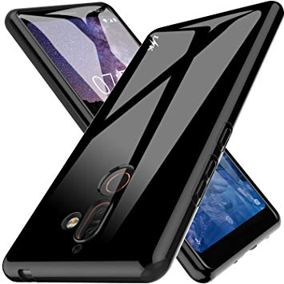
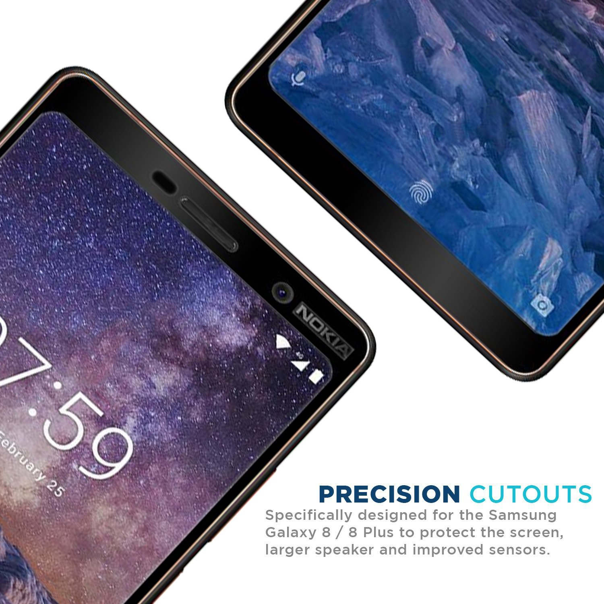
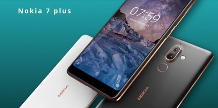

Tecnologia Celular
Nokia
Anteriormente, Nokia Corporation era una empresa orientada principalmente a la fabricación de teléfonos móviles, siendo líder mundial en este sector entre 1998 y 2011. Sin embargo, en sus últimos años como fabricante de teléfonos móviles, sufrió una disminución de la participación del mercado como resultado de la creciente utilización de los teléfonos inteligentes de otros proveedores. Como resultado, la cotización de sus acciones cayó desde un máximo de 40 dólares en 2007 a menos de 3 dólares en 2012. En febrero de 2011, Nokia Corporation estableció una alianza estratégica con Microsoft Corporation, como parte de la cual todos los teléfonos inteligentes Nokia Corporation incorporarían Windows Phone. Tras este acuerdo, Nokia se convirtió en el principal proveedor de smartphones con Windows Phone.

El 2 de septiembre de 2013, Microsoft Corporation anunció la compra la división de dispositivos móviles y el licenciamiento de las patentes de Nokia Corporation en un acuerdo global por un total de 5440 millones de euros (7200 millones de USD). La venta de esta división se cerró el 25 de abril de 2014.
El 14 de enero de 2015 Nokia completó la compra de Alcatel-Lucent por 15 600 millones de euros. La nueva Nokia Corporation pasa a ser la segunda empresa a nivel mundial en el sector de las telecomunicaciones.

El 18 de mayo de 2016, Microsoft Mobile vendió su negocio de telefonía móvil de la marca Nokia a HMD Global.3 Posteriormente, Nokia firmó un acuerdo de licencia a largo plazo para convertir a HMD en el fabricante exclusivo de teléfonos y tabletas de marca Nokia fuera de Japón, operando conjuntamente con Foxconn. El acuerdo también otorgó a HMD el derecho a las patentes esenciales y al software telefónico. Mientras que Nokia no tiene ninguna inversión en la empresa, sí tiene alguna participación en los nuevos dispositivos.
